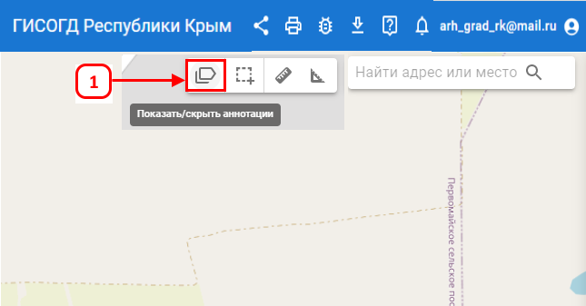
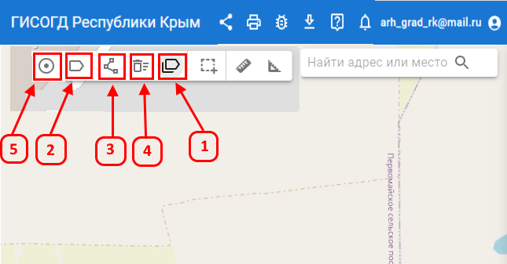

Аннотация — это функция, которая позволяет добавлять текстовую информацию или пометки на карте.
Для работы с аннотацией требуется: на верхней панели инструментов нажать на кнопку (1) Показать/скрыть аннотации.

После включения аннотаций появится список функций:

Аннотация видна пользователю в браузере на том компьютере, где она создается и под данной учетной записью, и может использоваться для печати фрагмента карты.